来源：https://vnng84yf44.feishu.cn/docx/Y6I0dhenpoS3x8xsRvwchjKznmd
各位生财圈友们好，我是小伞。从一个职场宝妈，成长为了一个自由职业者。
加入生财一年多，一直在潜水，觉得我的经历和拿到的结果，还不够含金量来生财发帖，但好朋友李慢慢一直鼓励我，让我来分享一下和生财的故事。
所以，我就来了，感谢慢慢的鞭子——
这篇帖子，更多的是分享我的经历，希望能够给想要从职场上跳出来的圈友们，或者要开始海航的新圈友们，一些信心和勇气。
先讲一下自由职业半年多来取得的小成绩：
主要做公众号爆文+IP（纯手搓），半年内涨粉4W+，私域引流近1W，付费用户300+，基本稳定月入5位数。
而在这之前，我是一个白天打工，晚上带娃，每天挤时间参加航海折腾副业的宝妈。说出来有点丢脸，去年的我，28岁，还是会为工作掉眼泪。
在自媒体还没有稳定收入的时候，我裸辞了（现在想想真的有点莽又有点勇，不过我也断断续续探索副业一两年了），我想着自媒体只要一个月能赚2000，这条路我就要走下去。
于是，一个人，带着点不甘，和微弱的勇气，在慌乱中上路了。没想到，裸辞的第二个月就获得了极大的正反馈，我写出了10万+大爆文，靠公众号爆文的流量主收益月入上万，顺利踏上了自由职业的道路。
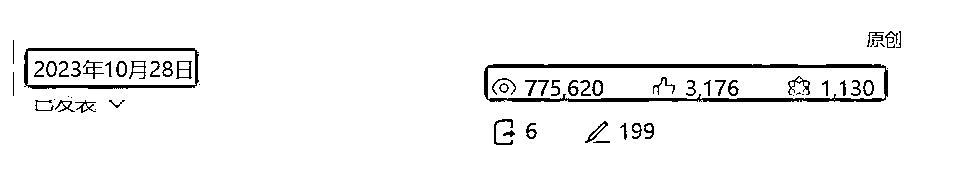
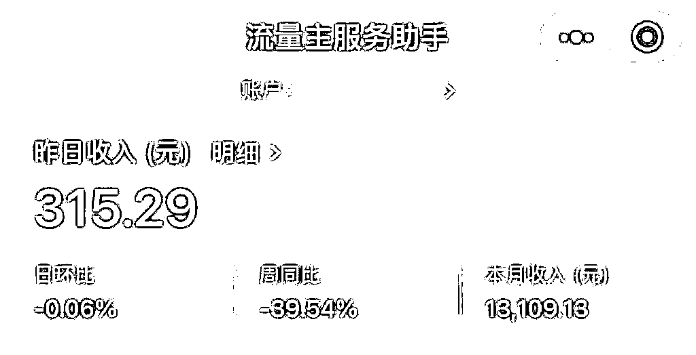
直到现在，公众号一条广告可以顶我之前打工一个月的收入，我终于能过上相对从容的生活了。而这一切，都要从我加入生财有术说起。
今天，我想分享一下，生财有术到底带给了我什么，为什么我会对这个社群有如此高的向心力和忠诚度。
2023年4月18日，我加入了生财有术。
那时候，我还在职场苦苦挣扎，一边工作带娃，一边挤时间做自媒体，眼前都是问题，但我好像解不出答案。
当时的我，是急迫的、困顿的、微弱的、透明的，像无头苍蝇一样乱撞，也像鸵鸟一样常常埋头沮丧。
不过，即使时不时就被现实打得鼻青脸肿，但骨子里有一种坚韧的力量，不要脸的说，这句诗是我的真实写照——身处泥泞，仰望星空。
没错，不管我当时多菜，我都无比相信我的未来一定是美好的——因为在生财见到足够多的、普通人逆袭的真实故事。
说来有点好笑，那会娃睡了之后，我在漆黑的房间里辗转反侧，睡不着觉的夜晚，我会打开生财有术，搜“100万”这个关键词，出现各种帖子，我就一篇一片翻，看别人都是如何从0到1赚到人生的第一桶金。
草根逆袭的故事，在任何时代，都打动人，不是吗？所以，每次看完，我就觉自己又行了。
毕竟，赚钱的人这么多，为什么不能多我一个？如果这个世界就是二八定律，那我就要去做那20%。
这就是一年前菜鸟的我心里的所思所想，那会，在加入生财的第一天，还给自己画了一个大饼，写了一封信。
我把这封信的内容贴出来：
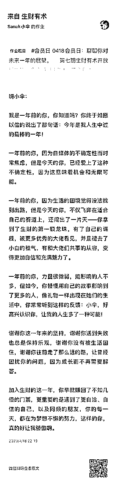
虽然现在也没赚到什么钱，但回过头看，发现自己真的已经走了很长很长一段路：
一年前的我，因为自媒体的不确定性常常焦虑，觉得找不到出路；一年后的我，已经找到了适合自己的赛道，不说飞奔吧，但至少在匀速前进。
一年前的我，力量很微弱，没几个粉丝，发圈没啥人点赞；一年后的我，公众号拥有了4万多粉丝，陪伴群拥有了300多个可爱的朋友，会有人给我发私信，表达感谢，我终于如我所言，像礼物一样出现在一些人的生活中。
一年前的我，大佬的微信不敢加，加了也不敢发自我介绍；一年后的我，虽然还没有获得和大佬共事的从容，但物理距离上去接近大佬，加微信、拍合影这种事已经难不倒我了，有图有真相【狗头】。
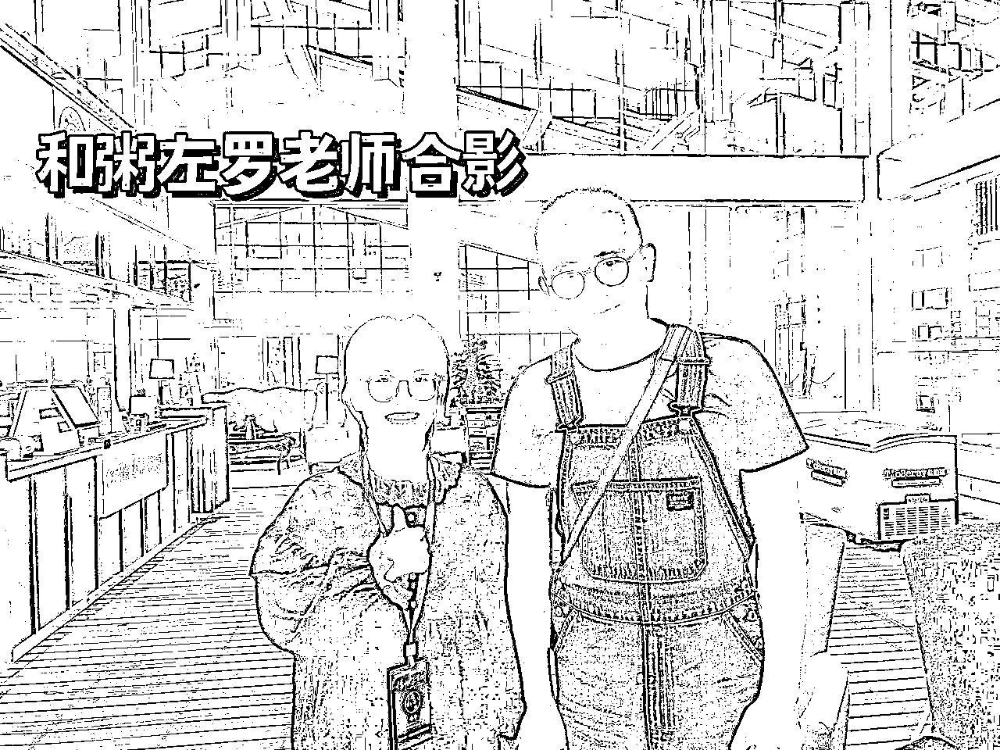
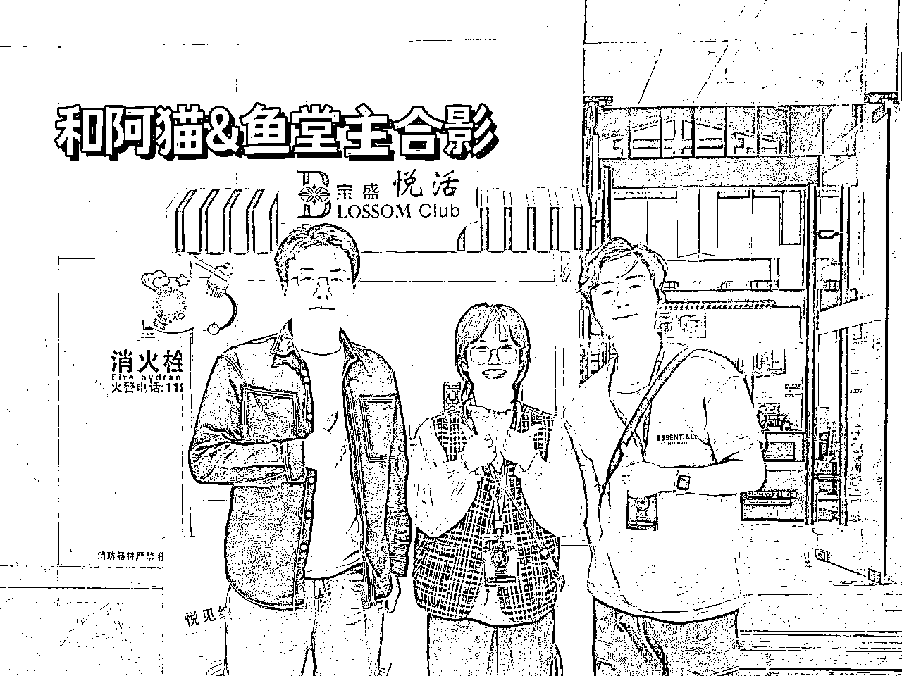
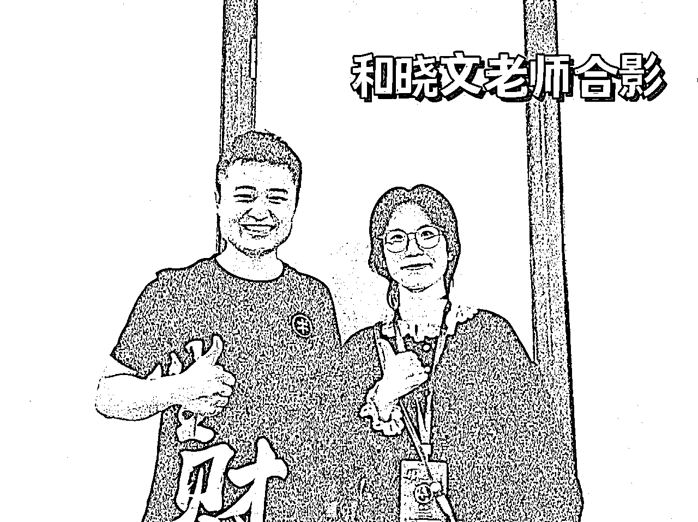
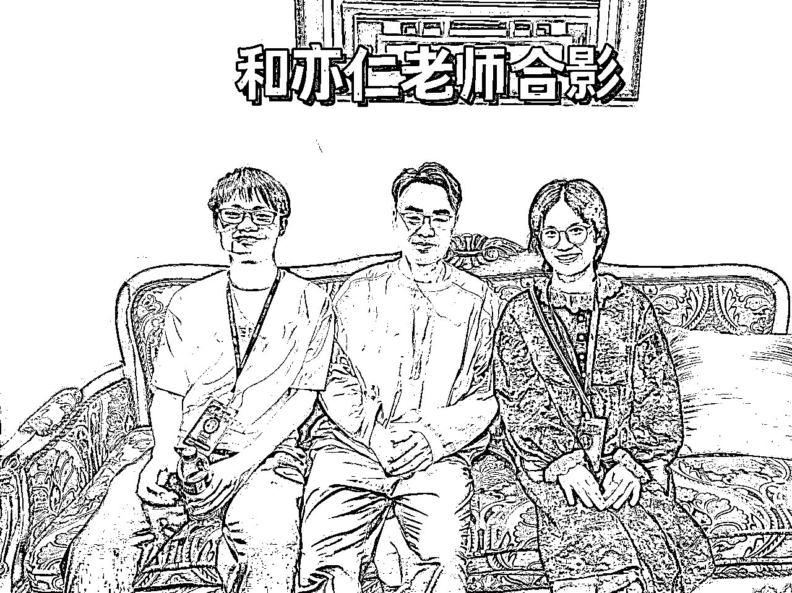
一年前的我，没有自己的产品和课程；一年后的我，已经有了。
一年前的我，是个小萌新，一颗龙珠都没有；一年后的我，对不起还是没有龙珠，但没准今年就能实现了！
你看，2023年的4月18日，我在生财写下的许愿帖，一年后，居然多多少少都实现得差不多了！生财真的有点魔力在里面。
很喜欢这句话——因为看见，所以相信。
生财对我而言，就是希望。
在没有进生财前，我不知道，原来赚钱的方法这么多。那会看帖子，经常一边拍大腿一边感叹：哇靠牛逼！居然还有这种操作？
以前是不光没吃过猪肉，还没见过猪跑，进入生财后，虽然猪肉没吃上，但好歹知道猪长什么样了（是褒义啊）——也就是见到足够多的赚钱方式和机会了。
所以，我发现，有的人是学生、是宝妈、是失业在星巴克写稿的中年人，是千千万万个个体，但他们都用自己的方式，且是非主流的方式，闯出了属于自己的那条罗马，赚到了人生的第一桶金。
他们的存在本身，就是一种希望，希望是非常可贵的稀缺资源，每个人，都有责任和义务，守护好内心的希望小火苗。
分享一个可能不太恰当的例子。几年前，我想着要去考公务员，这个通道残忍的地方在于——你不一定有岗位可报。
尤其天坑专业，不管你在岗位表出来之前备考了多久，要是连三不限的岗位，都限制住你了（主要是地理位置的限制），那这条路相当于死路一条，你就只能明年再来了。
所以，那会感受最深的一点是——我想要在海口市内，找到一个我的专业能报的岗位，暂且不管竞争多激烈，而是我到底有没有资格竞争，这都是问题。
但是，我发现，原来把职业发展的方向，从主流的“进体制”这个狭窄的选项解放出来，人生真的就不是轨道，而是旷野。
我真的可以不用通过职场，而是通过做副业、做自媒体，就能成为一种工作方式，过上自给自足的生活。
生财有术里，那些一个个活生生的案例，都在告诉我——此路畅通。
所以，我的希望之火，被点燃了，且一直燃烧到了现在。
因为我坚信，就像亦仁老师说的，每一个普通人，都有机会赚到人生的100万、1000万。
生财有术，是一个谈钱不伤感情的社群，且社群里的信息，大多领先市场至少半年。
在这里，每年有100+场航海实战，而我也几乎每一场都至少会报一条船，我之所以知道有【公众号爆文】这个项目，就是在生财里发现的——
原来公众号的推流机制改版了呀？原来流量主是这么赚钱的呀？原来还有人靠这个日入5位数？！
这就是领先市场的信息带给我们的时间红利——在供需不平衡时早早入场，用时间打造竞争壁垒，毕竟，优质的信息一开始都是在小范围的圈子里流动罢。
所以，对我来说，生财有术不仅给我希望，还给我通往希望的指南针和地图，不仅给我鸡汤，还给我勺子。
有图有真相：2023年2月14日，在生财看到公众号爆文航海项目
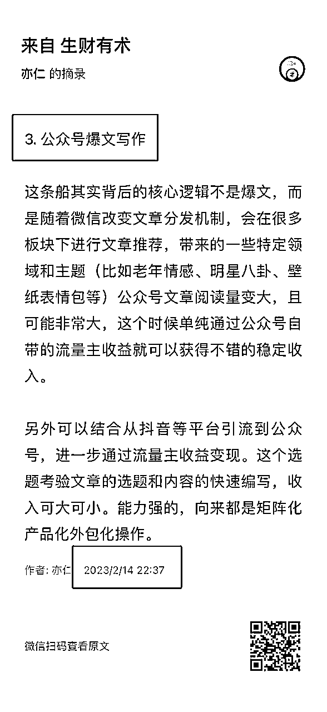
2023年8月7日，公众号月入几十万的案例出现。
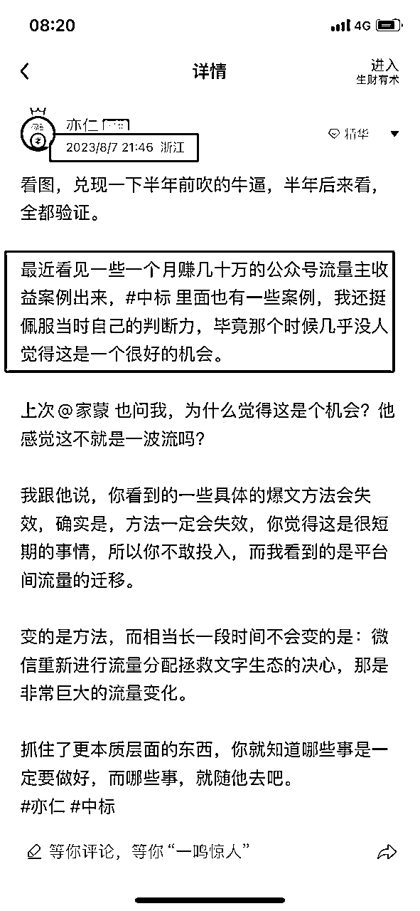
而我2023年10月才正式all in，也取得了不错的成果。
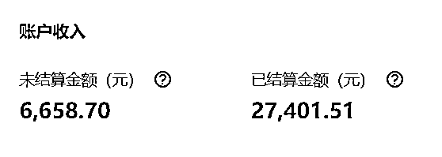
当然，在生财里，我除了看实操的项目帖子外，我还非常喜欢看无关赚钱，但会讲心态、讲认知、讲人生原则类的帖子。
亦仁会告诉我——看不清全局是常态，要更勇敢在模糊中前进；要绝对的确定性，回家躺着去，赚钱，永远是勇敢者的游戏。
这些心法上的东西，比实战技巧更吸引我——有时候，对赚钱的认知，远远比具体的技巧有效。
就像笑来老师说的——价值观决定命运。生财有术就是我的商学院，我对赚钱的认知，在一篇篇帖子中，一点一点建立起来。
当然，生财带给我的，远不止这些，它还让我进入到更优质的圈子里，认识了很多线上的好友。
在这里，要感谢一下我的好朋友们，是李慢慢的不断鼓励，让我坚定方向，带着小透明的我不断破圈。
是二爷教我怎么做课程，怎么做交付，打通了我内心的卡点。
是宇宙让我学会了要更主动、更勇敢，大胆去做干就完了（切身体会到了这8个字的力量），从他身上学到了很多关于商业模式的思考，而这还只是冰山一角。
我能明显感觉到，因为好朋友们的能量，让我拥有了更多的信心、勇气和底气。
所以呐，我们接触的每一个人，都会反向塑造我们，常常会感叹生财的圈子，让我遇到了很多优秀的贵人和朋友。
尤其去杭州参加线下见面会后，我感悟更深了。
出发之前，我家里人说，可别进传销组织了啊。我笑笑。因为真的，生财确实有点这股劲——
在现场看到线下这么多圈友，我们都来自一个社群，自发、自愿的从五湖四海汇聚到这里，我们都对搞钱感兴趣，我们都认同这个社群的理念。
这样一群人，看着台上的人演讲，然后鼓掌，大家聚在一起交流能聊通宵，这样的场景真的很罕见。
当时发了条朋友圈，底下还有一个很有意思的评论——“韭菜长得真好。”
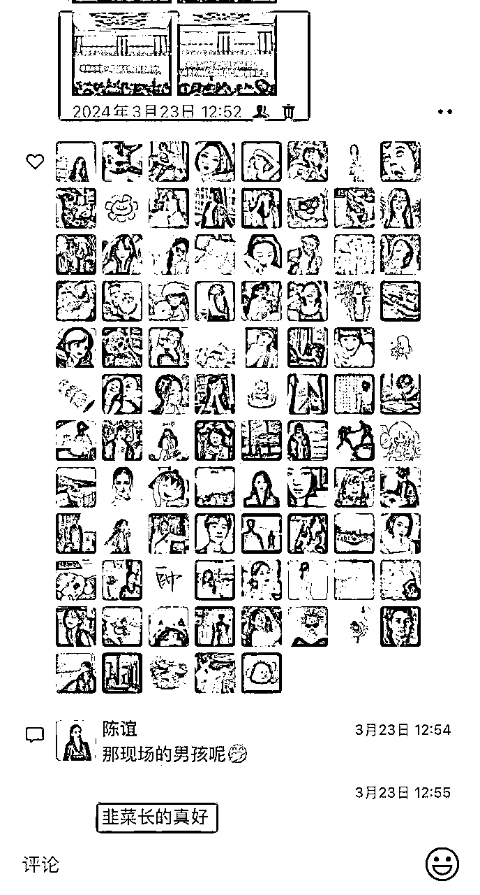
我只能替这位朋友感到可惜——ta错过了有可能转动生命齿轮的机会，却浑然不知。
我用一年时间确认了，生财真的不是传销组织，我们都是争着抢着自愿交钱的。看看连续三年高达60%的续费率就知道了。
当然，更重要的是和具体的人，产生更深度的关系。我的合作伙伴，都是生财里的人，我们价值观一致，他们还会给我情绪价值，告诉我，朝着这个方向不断前进，就能走到灯火通明的地方。
对于一个在模糊中前进的人，有人跟你说：“这条路是对的，你就这么大胆的往前走吧。”
这句话就是定心丸啊，能缓解多少徘徊犹豫，能减轻多少内部损耗。
就像那时候我带着朋友做公众号，她们跟我说：伞，我这阅读量才两三个，正常吗？
我说：再正常不过了，你持续更新，99%能进池，早晚罢了。
不到一个月，她真的写出了七八万的爆文，没有任何经验，从0粉开始啊。
她说：“伞，我坚持下来，是因为你告诉我可以，要不然看着0-3个阅读量，我早放弃了。如果一件事我事先知道结果是确定的，那就不怕过程面临的挑战。”
所以，谁能让你坚定的在迷雾中前行，谁能给你指点迷津，谁能加速你的成长，谁就是你的贵人。
时间就是红利，早就是优势，我们靠时间打造的壁垒，别人也要靠时间才能去攻克。
在生财圈子里，不缺乏这样的贵人，只要你保持成长，大胆发声，发散价值，主动链接，就会在路上遇到朋友和贵人。
当然，还有人在生财遇到了爱人，成了家，有了孩，过着神仙眷侣的生活，每每看到都会在心里默默祝福。
亦仁老师说的这句话，我记了很久：
“我一直鼓励很多人，不管怎样，加油先赚到第一块钱。第一块钱是赚钱路上的质变，有了第一块钱的反馈，你才会真的相信，原来除了打工上班赚工资，真的有其他赚钱的方式。”
我刚加入生财的时候，我以为自己有经验，很快就能赚到钱；但是参加了两次航海，都没有赚到，主要还是心浮气躁，没有脚踏实地。
看到亦仁老师说的，先赚到第一块，于是我重新把预期降低，就以1块钱为目标去躬身入局，没想到在公众号这条船上，却赚回了不止几倍的门票。
所以，如果你也是新圈友，正要跃跃欲试参加航海，我想说的是，把预期降低，把耐心放长，把执行力拉满，该来的都会来。
毕竟，自媒体很公平，在这件事上，没有性别歧视，甚至没有对手。
我也一直相信，女性有大大的力量，虽然我们在职场上会被生育等客观因素限制住，但女性的力量远比我们所想象的要大得多。
我们可以不必是职场里的螺丝钉，家庭成员里的辅助和后勤，我们能做主角，也应该做主角。
我已经越来越感受到，女孩子，无论是单身、成家、生育还是离异，都永远有得选，都可以按照自己的意志，去创造想要的人生。
而自媒体，就是普通女孩逆天改命最好的通道之一，借助这个杠杆，我们都能赚到打工外的第一块，甚至挣到人生的第100万，1000万！
以上，感谢你阅读到这里。